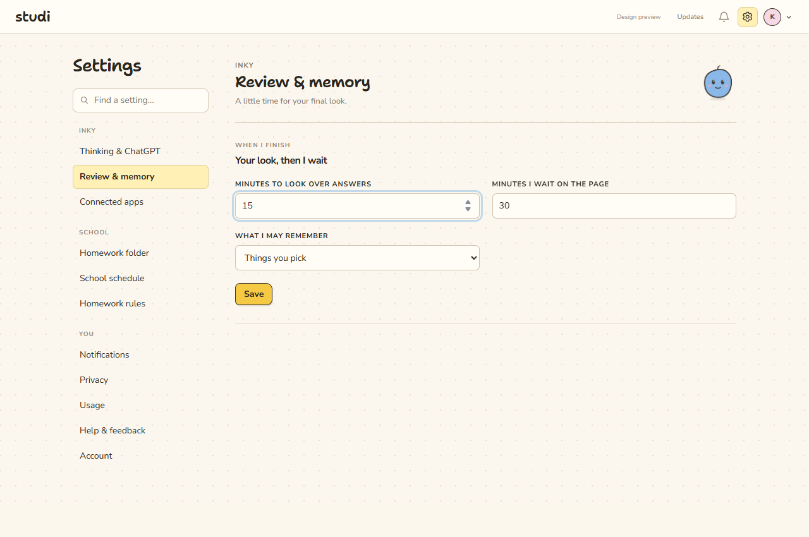

Integrated PRs 23 and 24 on codex/integrated-app-polish. Final local-school journey passes: approved account → scan → draft → cancel/retry → pause/resume → saved answer and review. No real schoolwork was submitted.
Worktree: C:\Users\kaust\.codex\worktrees\qa-polish\studi-2. Original checkout preserved. PRs 21 and 22 were already merged; the prior PR 21 task informed chat checks. No remote push, GitHub merge or deployment.
| Area | Result |
|---|---|
| Core tests | 191 passed: agent/browser, auth, storage/lifecycle, contracts, packaging and foundation. Covers stale references, repeat-scan identity, draft controls, revoked permission, retry and cancellation. |
| UI and telemetry | 24 passed, including real PostHog SDK delivery. Typecheck and builds pass. |
| Native Electron | Four positive scenarios; invalid-profile, renderer-load, malformed-manifest and malformed-runtime rejections; clean profile cleanup. |
| Agent harness | Foundation, routing, trace and files pass: 27 assertions. |
| Real renderer | Settings search, empty state, save and all 11 sections at 1280×850, 1024×768 and 720×520; undated navigation; assignment opening; account Escape; chronological handoff cards and disabled checking controls. |
| Live account | Dedicated development Clerk user created, linked invite accepted, consent completed, approved Convex admission. Same approved identity reused after multiple restarts. Actual Codex provider ready with gpt-6-astra. |
| Live agent | Pi scanned Writing 101, captured instructions and Wednesday 11:59 PM deadline, then wrote and saved a three-sentence answer. Fixture confirmed draft saved and not submitted. Home chat quoted the answer accurately. Final repeat scan reused the same ID. Final cancel/retry/pause/resume returned to ready_review in two turns. |
| Persistence | Access, onboarding, conversations, assignments and saved Markdown survive graceful restart. Interrupted review truthfully asks the student to inspect the reopened page. |
| Live build | Profile integrated, tree SHA 148a4579aac4c382545585219a2e6055b1c5ab49ae314e7b30e06e94d74677e4. Subsequent renderer-only edit removes an unreachable Saving label; tested agent modules are unchanged. |
Verified PostHog replay: snapshot requests returned HTTP 200 and playback worked after ingestion. Configuration checked against PostHog replay troubleshooting.
Replay captures Studi's renderer. The separate native school browser is not included as video in that DOM recording; browser observations remain diagnostics. Passwords, tokens and marked secrets remain protected. Real-school credentials/submissions, installed auto-updating and every connected-app provider were not exercised. The existing Squirrel updater error needs an installed-package test. Historical duplicate QA rows were retained; the final repeat adds none.
Existing React components and paper styling, with readable controls.
